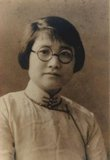

珞珈三女杰
从今起陆续贴些武汉大学历史上的逸事奇闻。
珞珈三女杰
维基百科，自由的百科全书
珞珈三女杰是指国立武汉大学中文系教授苏雪林、外文系教授袁昌英和文学院院长陈源（西滢）的妻子凌叔华，亦称“珞珈林山三个文学朋友”（珞珈三杰）。三人在生活中是很好的朋友，同时也都是自“五四”以来的中国文坛上很有名气的女作家。
目录
a.. 1 苏雪林
b.. 2 袁昌英
c.. 3 凌叔华
d.. 4 参见
e.. 5 外部链接
苏雪林
袁昌英
凌叔华
苏雪林
1933年苏雪林于武大
苏雪林是文豪苏辙第38代嫡孙，其长篇自传体小说《棘心》（中国第一部描写留学生生活的小说）和散文集《绿天》在中国现代文坛上产生过较大影响。她与新文化运动的三位领袖人物李大钊、胡适、陈独秀都有交往。是李、胡的学生，对陈独秀还经历了由憎恨到钦佩的戏剧性变化。
苏雪林1931年受聘于国立武汉大学，直至1949年赴台。主要讲授中国文学史，基本国文和新文学研究。1937年4月，她将自己多年积蓄的薪金、版税和稿费共计51两金条，全部捐献给危难中的国家作抗战之用。她对鲁迅的看法从赞颂到反对也是众人皆知、举世瞩目的，“反鲁”成了她的半生事业。1998年5月，曾回安徽黄山黄山区永丰乡岭下苏家村老家。1999年4月在台南辞世，她也是中国现代文坛最长寿的作家。
袁昌英
袁昌英女儿杨静远编选的纪念文集
袁昌英是获得爱丁堡大学文学硕士学位（1921年）的第一位中国女性。她以现代主义重新创作的剧作《孔雀东南飞》，散文《游新都后的感想》和《再游新都的感想》开创了中国女作家的创作先河。她也是一名外国文学研究家，艺术史家。
袁昌英1928年受聘于国立武汉大学，1930年，袁昌英的丈夫杨端六也受聘于武大。后来由于有越来越多的夫妻留学生要进武大，学校就立了夫妻两人不能同时在武大教课这么一项规矩，他俩是唯一的例外。九·一八事变发生后，她带领学生为马占山将军领导的抗日义勇军奔走募捐，日夜赶制寒衣。抗战胜利后，曾倡议创办一所中国女子大学，未能实现。中华人民共和国成立后，她将自己的藏书几乎全部捐献给武大图书馆。抗美援朝期间，夫妇俩是所有武大教师中捐钱最多的。1957年“反右运动”中袁昌英被错划为右派，文革时又遭迫害，1973年4月逝世于湖南醴陵老家。其子杨弘远亦为武汉大学教授，中国科学院院士，中国被子植物胚胎学的开拓者之一。
凌叔华
陈源、凌叔华夫妇摄于新婚后
凌叔华以短篇小说《酒后》在文学界成名，也是画坛高手。鲁迅曾指出凌叔华的小说描写的是“高门巨族的精魂”。英文师从辜鸿铭，与冰心、林徽因一同被誉为1930年代“北方文坛的三位才女”。1924年春，因北大指派陈西滢和徐志摩负责接待泰戈尔来华访问，而同时与两人相识。凌叔华的大书房也成了中国最早的沙龙，她与徐志摩的关系一度走得很近，徐志摩、沈从文、苏雪林都曾誉之为“中国的曼殊菲尔”，徐志摩墓前诗碑文“冷月照诗魂”亦由她亲笔所书。
1928年，陈西滢受聘于国立武汉大学，凌叔华也随同丈夫前往。陈西滢因身为文学院院长怕人闲话，始终未让她在武大教书。1935年10月，凌叔华结识到武大任教的英国青年诗人、弗吉尼娅·伍尔芙（Virginia Woolf）的侄子朱利安·贝尔（Julian Bell）并发生了婚外情。抗战爆发后，她随校迁往四川乐山，其间在成都、乐山接连开了几次画展，两年后到燕京大学任教。1947年起，全家人在英国定居。1953年，她在与伍尔芙以前的通信的鼓励下，用英文写成的带有自叙传色彩的小说《古韵》（Ancient Melodies，又译作《古歌集》）由英国荷盖斯出版社（The Hogarth Press）出版时，曾经引起英国评论界的重视，成了畅销书。1989年12月，她以耄耋之年坐着轮椅落叶归根。1990年5月病逝于北京。
凌叔华绘给徐志摩的贺年片《海滩上种花》
参见
a.. 苏雪林、凌叔华与冰心、冯沅君、丁玲亦被称做1930年代“中国五大女作家”（“民国五才女”）。
外部链接
a.. 《二十世纪中国著名女作家传》
b.. 苏雪林文集
c.. 袁昌英散文
d.. 中国现代文学百家·凌叔华
e.. 苏雪林《记袁昌英女士》
